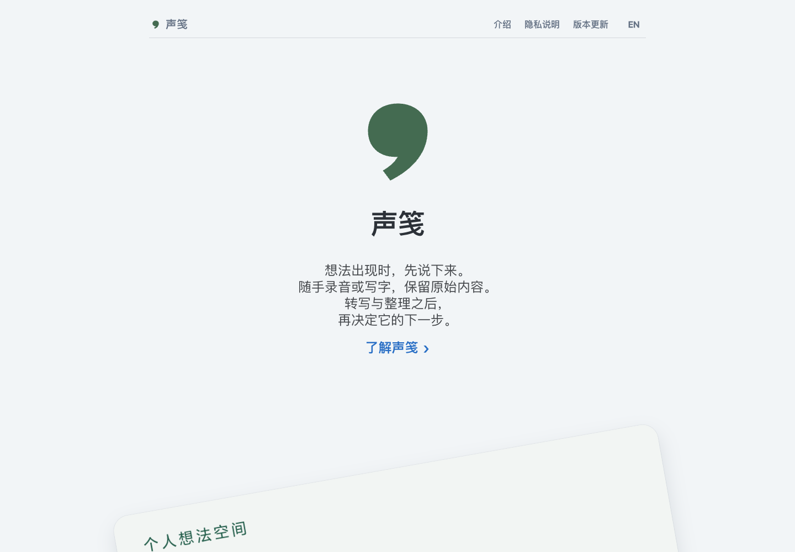

现代极简、以产品展示为主。
视觉语言
- 选择依据：以简短文字与真实界面介绍个人记录工具，减少与产品无关的装饰，让品牌与产品形态成为视觉重点。
- 目标气质：安静、清晰、平实。浅色背景与充足留白保持舒展，圆润的引语标识增加亲和感。
- 表达重点：大标识建立品牌识别，大界面展示产品细节；不依赖复杂背景或密集卡片营造丰富感。

首页布局预览，2026 年 10 月 3 日。
字体与层级
- 中文：使用系统无衬线字体，按设备匹配苹方、微软雅黑等可用字体，延续设备的阅读习惯。
- 英文与数字：优先使用系统字体，以 Arial 等字体回退；与中文沿用同一套层级，不另设展示字体。
- 字重：主标题采用粗体，章节标题与文字操作适度加重，正文采用常规字重；以排版区分角色。
- 字号：首页主标题 40–50px、章节标题 30–36px；文档正文 16–17px。手机收小展示字号，保留标题与正文的层级差异。
版式与节奏
- 首屏：标识、产品名、简介与文字入口居中排列；短句集中，四周留白，突出单一主题。
- 产品主图：突破文字栏宽度，与窄栏简介形成尺度对比，增加界面展示面积。
- 首页章节：章节之间疏朗，段落内部紧凑；避免每段内容都包裹成独立卡片。
- 文档页：单栏左对齐；章节与版本条目通过间距、标题和细线区分，便于连续阅读与逐条查阅。
- 手机：缩小主图与章节留白，导航自然换行；页脚由多列逐步转为单列，备案信息居中排列。
色彩
- 背景：浅灰蓝
#F2F5F7为主底色；近白#FBFCFE与白色用于内容分区，以轻微明度变化分隔章节。 - 文字：深灰
#2C3138用于标题，#44474B用于正文，灰蓝#647184用于导航、日期与辅助说明。 - 操作：蓝色
#286EC5用于主要文字入口、链接反馈与键盘焦点，明确可操作位置。 - 品牌：灰绿
#446B51保留在引语标识中，与蓝色操作区分；不将品牌色铺满页面。
图像与形状
- 品牌标识：圆润头部与短弧形尾部组成单个引语记号，呼应“说下来”的表达；保留原有比例与颜色。
- 产品界面：使用真实归档截图，旁注版本与日期，明确展示对象；按比例放大与裁切，不拉伸界面。
- 主图构图：倾斜画面、局部裁切与圆角阴影形成层次，为平直排版提供视觉变化；阴影集中用于产品图。
- 辅助图形：流程采用简短符号配文字，保留轻量表达；常规内容以平面排布为主。
动效与反馈
- 静态展示：当前没有持续动画，主图倾斜属于静态构图；浏览时保持画面稳定。
- 悬浮反馈：链接变蓝，主要文字入口补充下划线，提示可点击位置。
- 定位与焦点：当前页面导航使用深色，键盘焦点使用蓝色轮廓；区分所在位置与正在操作的控件。
- 语言切换：中英文沿用同一版式与层级，切换后更新文字，保持品牌与页面结构一致。
资料与观察范围
- 声笺 Jotora 官网。规范依据为官网已发布版式；画面来源与日期见文中配图说明。
- 历史视觉参考：Things 官网。参考居中简介、留白与放大界面的布局方式，保留声笺自身标识、内容和产品截图。
- Apple：系统字体介绍。系统字体随设备变化，不将 Apple 字体特点概括为所有平台的共同表现。
观察范围：首页、隐私说明与版本更新页；依据官网已发布版式。选择依据与视觉作用为本次设计归纳，不代表用户研究结论。
留言
由 Disqus 提供。